The region between China, India, Australia, and the Pacific Ocean is known as Southeast Asia. Southeast Asia includes countries with political boundaries creating many shapes and sizes. The political borders were created through a combination of factors, including natural features, traditional tribal distinctions, colonial claims, and political agreements. The realm also has the fourth-most populous country in the world, Indonesia. Southeast Asia is a region of peninsulas and islands. The only landlocked country is the rural and remote country of Laos, which borders China, Vietnam, and Thailand. The physical geography of Southeast Asia includes beaches, bays, inlets, and gulfs. The thousands of islands and remote places allow refuge for a wide variety of cultural groups and provide havens for rebellious insurgents, modern-day pirates, and local inhabitants.
Southeast Asia can be divided into two geographic regions. The mainland portion, which is connected to India and China, extends south into what has been called the Indochina Peninsula or Indochina, a name given to the region by France. This mainland region consists of the countries of Vietnam, Laos, Cambodia, Thailand, and Myanmar (Burma). This region has been influenced historically by India and China. The islands or insular regionThe region consisting of the islands of Southeast Asia—Brunei, East Timor, Indonesia, Malaysia, Philippines, and Singapore. to the south and east consist of nations surrounded by water. The countries in this region include Malaysia, Singapore, Brunei, Indonesia, East Timor, and the Philippines.
Figure 11.1 Southeast Asia: The Mainland Region and the Insular Region (the Islands)
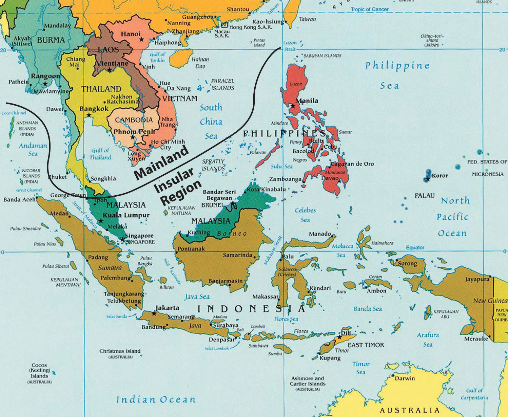Source: Updated from map courtesy of University of Texas Libraries, http://www.lib.utexas.edu/maps/middle_east_and_asia/southeast_asia_pol_2003.jpg.
The islands and the mainland of Southeast Asia include a wide array of physical and cultural landscapes. The entire realm is located in the tropics except the northernmost region of Burma (Myanmar), which extends north of the Tropic of Cancer. A tropical Type A climate dominates the region and rainfall is generally abundant. The tropical waters of the region help moderate the climate. Southeast Asia is located between the Indian Ocean on the west and the Pacific Ocean on the east. Bordering the many islands and peninsulas are various seas, bays, straits, and gulfs that help create the complex maritime boundaries of the realm. The South China Sea is a major body of water that acts as a separator between the mainland and the insular region. The thousands of islands that make up the various countries or lie along their coastal waters create a matrix of passageways and unique physical geography.
The three longest rivers of the realm, Mekong, Red, and Irrawaddy, are located on the mainland and have their headwaters in the high elevations of Himalayan ranges of China. The Mekong River makes its way from the high Himalayas in China and helps form the political borders of Laos and Thailand on its way through Cambodia to Vietnam where it creates a giant delta near Ho Chi Minh City (Saigon). The Red River flows out of China and through Hanoi to the Red River delta on the Gulf of Tonkin. The Irrawaddy River flows through the length of Burma providing for the core area of the country. Another major river of the mainland is the Chao Phraya of Thailand. With its many tributaries, the Chao Phraya creates a favorable core area that is home to the largest population of the country. Many other rivers can be found on both the mainland and the insular region. The rivers transport water and sediments from the interior to the coasts, often creating large deltas with rich soils that are major agricultural areas. Multiple crops of rice and food products can be grown in the fertile river valleys and deltas. The agricultural abundance is needed to support the ever-increasing populations of the realm.
Tectonic plate activity has been responsible for the existence of the many islands and has created the mountainous terrain of the various countries. High mountain ranges can have peaks that reach elevations of over fifteen thousand feet. The high-elevation ranges of New Guinea, which are along the equator, actually have glaciers, ice, and snow that remain year-round. The island of Borneo, in the center of the insular region, is actually a segment of ancient rock that has been pushed upward by tectonic forces to form a mountainous land mass. The mountains on Borneo have been worn down over time by erosion. Mountains and highlands stretch across the northern border of the realm along the borders with India and China. The interior nature of this border makes it less accessible. Similar dynamics can be found in the interior of the islands of the insular region, where the isolation and remoteness have helped create the environmental conditions for unique flora and fauna. In the highland areas the human cultural landscape can be diverse. Time and isolation have worked together to form the traditions and cultural ways that give local groups their identity and heritage.
Tectonic activity makes the region vulnerable to earthquakes and volcanic eruptions. The volcanic peak of Mt. Pinatubo, in the Philippines, erupted in 1991, spewing ash and smoke into the atmosphere and impacting much of the planet. An earthquake of 9.0 magnitude occurred off the coast of the Indonesian island of Sumatra in 2004 and caused widespread disaster throughout the wider region of the Indian Ocean. As many as one hundred fifty thousand deaths were reported, mainly from flooding. A thirty-five-foot-high wall of water from the tsunami devastated many coastal areas from Thailand to India.
Southeast Asia has not escaped the impact of globalization, both colonial and corporate. As Europeans expanded their colonial activities, they made their way into Southeast Asia. Southeast Asia was heavily influenced by European colonialism. The only area of the region that was not colonized by the Europeans was Thailand, which was called Siam during the colonial era. It remained an independent kingdom throughout the colonial period and was a buffer state between French and British colonizers. The Japanese colonial empire controlled much of Southeast Asia before World War II.
Some of the countries and regions of Southeast Asia became known by their colonial connection. Indonesia was once referred to as the Dutch East Indies, which was influential in the labeling of the Caribbean as the West Indies. French Indochina is a term legitimized for historical references to the former French claims in Southeast Asia. Malaya and British Borneo each had its own currency based on a dollar unit that was legal tender for the regions of the Federation of Malaya, Singapore, Sarawak, North Borneo, and Brunei. Independence from the European powers and freedom from Japanese imperialism by the end of World War II provided a new identification for the various countries of the realm. Cultural and economic ties remain between many former colonies and their European counterparts.
Figure 11.2
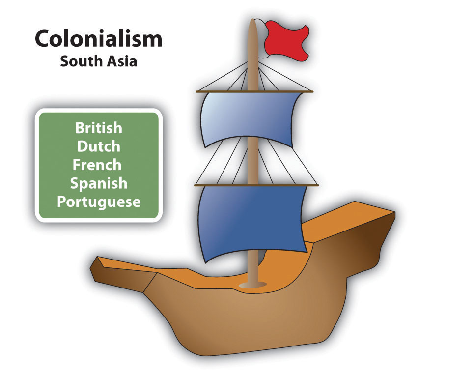Southeast Asia was colonized by Europeans and later by Japan.
East Timor, a former Portuguese colony south of Indonesia, has been the most recent colony to gain independence. Timor is an island just north of Australia. The western portion is claimed by Indonesia. The whole island was annexed to Indonesia in 1975. As a result of separatist movements that entailed conflict and violence, the eastern portion was finally granted independence in 2002. Since then, East Timor has been working to establish itself as a country and is now negotiating its offshore boundary to include important oil and gas reserves.
Southeast Asia has a population of more than six hundred million people; more than half the population lives on the many islands of Indonesia and the Philippines. The small island of Java in Indonesia is one of the most densely populated places on Earth. More than half of the two hundred forty-five million people who live in Indonesia live on the island of Java. The island of Luzon in the Philippines is also one of the more densely populated areas of the insular region. The Philippines has over one hundred million people, Vietnam has more than ninety million, and Thailand has about sixty-seven million. Local areas with high food-producing capacity are also high population centers, which would include deltas, river valleys, and fertile plains.
The ethnic mosaic of Southeast Asia is a result of the emergence of local differences between people that have evolved into identifiable cultural or ethnic groups. Though there are a multitude of specific ethnic groups, a number of the larger ones stand out with recognizable populations. On the mainland the Burmese, Thai, Khmer, and Vietnamese are the largest groups, coinciding with the physical countries from Burma to Vietnam. A similar situation can be found in the insular region. Many distinct groups can exist on the many islands of the region. The island of New Guinea, for example, has hundreds of local groups with their own languages and traditions. The large number of ethnic groups is dominated by Indonesians, Malays, and Filipinos, coinciding with the countries of Indonesia, Malaysia, and the Philippines. Each of these main groups has many subgroups that hold to their own cultural heritage in the areas where they exist. The many islands of Indonesia and the Philippines create the opportunity for diversity to continue to thrive, in spite of the globalization process that increased the interaction and communication opportunities between groups.
Indonesia is also home to the largest Muslim population in the world. All major religions can be found here. The Philippine population is predominantly Christian, but there is a minority Muslim community, including rebel insurgents. Most of people in Malaysia follow Islam. About 95 percent of the people in Thailand and more than 60 percent of the people in Laos are Buddhist. Hinduism is present in the Indonesian island of Bali and in various other locations in the region. Animism and local religions can be found in rural and remote areas. Clearly, Southeast Asia is a mix of many ethnic groups, each with its own history, culture, and religious preference.
Southeast Asia is also home to over thirty million overseas ChineseEthnic Chinese who live outside of China.—ethnic Chinese who live outside of China. The Chinese exodus to the realm was the greatest during the last Chinese dynasties and during the colonial era. European colonial powers enhanced this migration pattern by leveraging the use of people with Chinese heritage in their governing over the local populations in the realm. Life has often been difficult for overseas Chinese. The Japanese occupation of the realm during World War II was a time of harsh discrimination against Chinese. Japanese occupation and colonialism diminished with the end of World War II. The overseas Chinese minority retained an economic advantage because of their former colonial status and their economic connections. Chinatowns emerged in many of the major cities of Southeast Asia. The discrimination against the Chinese, fueled by religious or socioeconomic differences, often continued after World War II by the local ethnic majorities. Nevertheless, overseas Chinese in Southeast Asia have been instrumental in promoting the global business arrangements that have established the Pacific Rim as a major player in the international economy.
Identify the following key places on a map:
The elongated state of Vietnam is slightly larger than Italy and about three times the size of the US state of Kentucky. In 2010 it was estimated to have a population of about ninety million people. Sixty percent of the population is under age twenty-one. This indicates that the population was only about half its current size at the end of the Vietnam War. Vietnam has two main urban core areas: Ho Chi Minh City (Saigon) in the south and the capital, Hanoi, in the north. The middle region of Vietnam is narrow, with higher elevation. Each core area is located along a major river delta. The Red River delta is located east of Hanoi in the north, and the mighty Mekong River delta is located next to Saigon in the south. These river deltas deposit silt from upstream and provide excellent farmland for growing multiple crops of rice and food grains per year.
Vietnam has a tropical Type A climate with a long coastline. Fishing provides protein to balance out nutritional needs. More than 55 percent of the population works in agriculture. Family size has dropped dramatically because of population growth and a trend toward urbanization. Rural-to-urban shift has caused the two main urban core cities to grow rapidly. Saigon is the largest city in Vietnam and has a port that can accommodate oceangoing vessels. Hanoi, the capital, is not a port city and is located inland from the nearest port of Haiphong on the coast of the Gulf of Tonkin.
An understanding of Vietnam is not complete without understanding the changes in political control the country of Vietnam has experienced. Different Chinese dynasties controlled Vietnam at different times. When France colonized Vietnam, it imposed the French language as the lingua franca and Christianity as the main religion. Both changes met resistance, but the religious persecution of Buddhism by the French colonizers created harsh adversarial conditions within the culture. The French domination started in 1858. The Japanese replaced it in 1940; this lasted until the end of World War II. With the defeat of Japan in 1945, the French desired to regain control of Vietnam. The French aggressively pushed into the country, but met serious resistance and were finally defeated in 1954 with their loss at the battle of Dien Bien Phu.
Figure 11.3 Southeast Asia and Vietnam
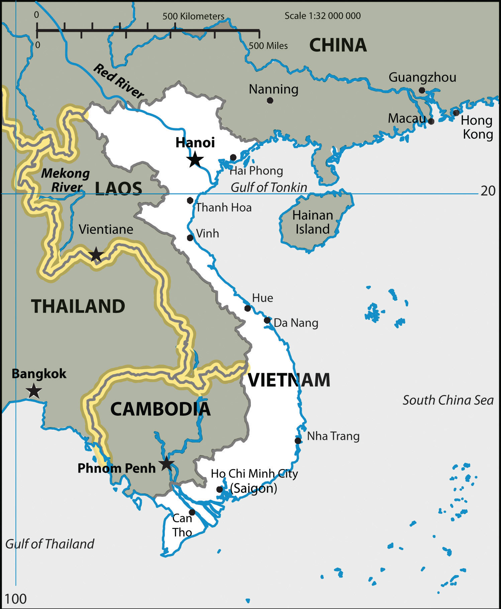The two main cities of Vietnam are both located next to large rivers. The capital, Hanoi, in the north is on the Red River. Ho Chi Minh City (Saigon) to the south is next to the delta of the Mekong River.
Source: Updated from map courtesy of NgaViet, http://en.wikipedia.org/wiki/File:Bandovietnam-final-fill-scale.svg.
In the mid-1950s, the Vietnamese began asserting their request for an independent country. The dynamics were similar to that of Korea. After 1954, Vietnam needed to establish a government for their independent country. They were not unified. The northern section rallied around Hanoi and was aligned with a Communist ideology. The southern region organized around Saigon and aligned itself with capitalism and democratic reforms.
During the Cold War, the United States opposed Communism wherever it emerged. Vietnam was one such case. Supporting South Vietnam against the Communists in the north started not long after the defeat of France. By 1960, US advisors were working to bolster South Vietnam’s military power. After the assassination of John F. Kennedy, President Lyndon Johnson had to make a choice to either pull out of Vietnam or push the US military to fully engage the Communists in North Vietnam.
Not wishing Vietnam and its neighbors to “go Communist” through a domino effectBelief that if one country is affected in some way, then the neighboring countries will be affected in the same way. This term was mainly applied to Southeast Asia and Communism in Vietnam.—where if one country fell to Communism its neighbors would follow—President Johnson decided to escalate the war in Vietnam. By 1965, more than one half million US soldiers were on the ground in Vietnam. History has recorded the result. Just as Vietnam was divided by political and economic ideology, the Vietnam War also divided the US population. Protests were common on college campuses and public support for the war was often met with public opposition.
Figure 11.4 Portrait of Ho Chi Minh, the Communist Leader of North Vietnam during the Cold War
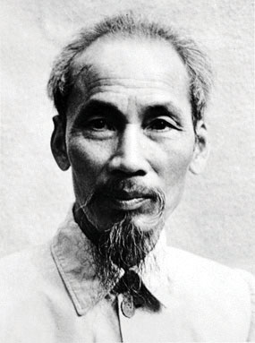The US government, under President Richard Nixon, finally decided to pull all US troops out from Vietnam after a cease-fire was agreed upon in a Paris peace conference in 1973. More than fifty-seven thousand US soldiers had died in the Vietnam War. Two years later, in 1975, the North Vietnamese Communists invaded South Vietnam and took control of the entire country. Vietnam was unified under a Communist regime. More than two million people from South Vietnam escaped as refugees and fled to Hong Kong, the United States, or wherever they could go. Thousands were accepted by the United States, which caused ethnic rifts in US communities. The United States placed an embargo on Vietnam and refused to trade with them. The United States did not open diplomatic relations with Vietnam again until 1996. The Vietnam War devastated the infrastructure and economy of the country. Roads, bridges, and valuable distribution systems were destroyed. Vietnam could only turn to what it does best: growing rice and food for its people.
Figure 11.5 Man Hauling Cut Wood on a Bicycle Cart (Pedicab) by the Perfume River Near the City of Hue, Vietnam
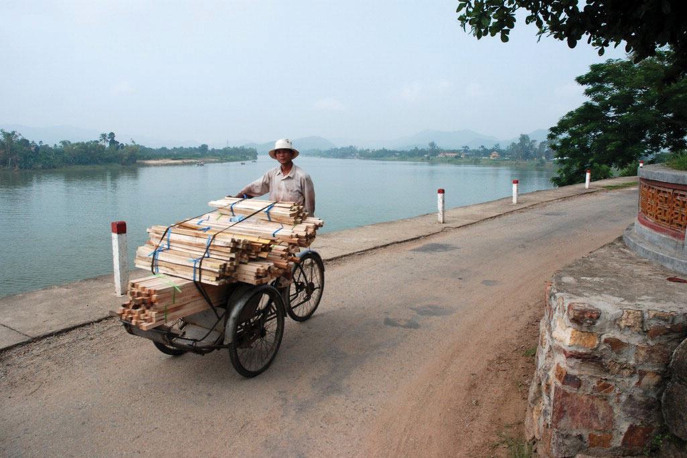Source: Photo courtesy of Heiko Carstens, http://www.flickr.com/photos/hierundsonstwo/280323293.
For the past three decades, Vietnam has been recovering and slowly integrating itself with the outside world. Its population has doubled; most of the population was born after the Vietnam War. Their main goal is to seek out opportunities and advantages to provide for themselves and their families. Vietnam has been a rural agrarian society. The two main core cities, however, are now waking up to the outside world, and the outside world is discovering them. Looking for cheap labor and economic profits, economic tigers such as Taiwan are turning to Saigon to set up light manufacturing operations. People from the rural areas are migrating to the cities looking for employment. Saigon has more than 8.5 million people and has a special economic zone (SEZ) located nearby. Rural-to-urban shift is kicking in. After 1975, the city of Saigon was renamed Ho Chi Minh City after the victorious Communist leader, Ho Chi Minh. Many of the people who live there and who live in the United States still refer to it as Saigon.
Any country that experiences rapid urbanization or economic change suffers from serious growing pains. Conflicts usually erupt over control of resources and land ownership, ethnic groups usually vie for power, and environmental damage is usually extensive. All these issues are evident in Vietnam. The dogmatic Communist government has acted to moderate both the problems and the economic growth. The future of Vietnam may be similar to most of Southeast Asia as it balances out the strong adhesive forces of local culture and the demands of a competitive global economy. The growing population will add to the demand for resources and employment opportunities. Vietnam has been a relatively poor country but it still has been able to export rice and other agricultural products. In recent years, the Communist government has implemented a series of reforms moving toward a market economy, which has encouraged economic development and international trade.
Globalization has prompted a strong rural-to-urban shift within Vietnam. The rural countryside is still steeped in its agrarian heritage based on growing rice and food crops, but the urban centers have been energized by modern technology and outside economic interest. Vietnam has enormous growth potential. The country’s urban centers are shifting from stage 2 of the index of economic development into stage 3, where the urbanization rates are the strongest. The rapid rise of the global economy that is connected to Vietnam’s major cities has provided jobs and opportunities that are highly sought after by the growing population. The city streets are filled with a sea of motorbikes and bicycle traffic. Cars are becoming more plentiful. Saigon has been a major destination for the export textile industry and other industries seeking a cheap labor base. Cell phones and Internet services have connected a once-isolated country with the rest of the world.
The geography of Laos centers on the Mekong River basin and rugged mountain terrain. Laos is landlocked. Vietnam shields Laos from the South China Sea to the east and Cambodia to the south. It doesn’t have a port city to the outside world. The mountains reach up to 9,242 feet. The Type A climate provides a rainy season and a dry season. The rains usually fall between May and November, followed by a dry season for the remainder of the year. The Mekong River flows through the land and provides fresh water, irrigation, and transportation. The country’s capital and largest city, Vientiane, is located on the Mekong River. Laos is about the same size in area as the US state of Utah.
Figure 11.6 Woman in Attapeu Province, Laos, Cooking Midmorning Snacks for Schoolchildren
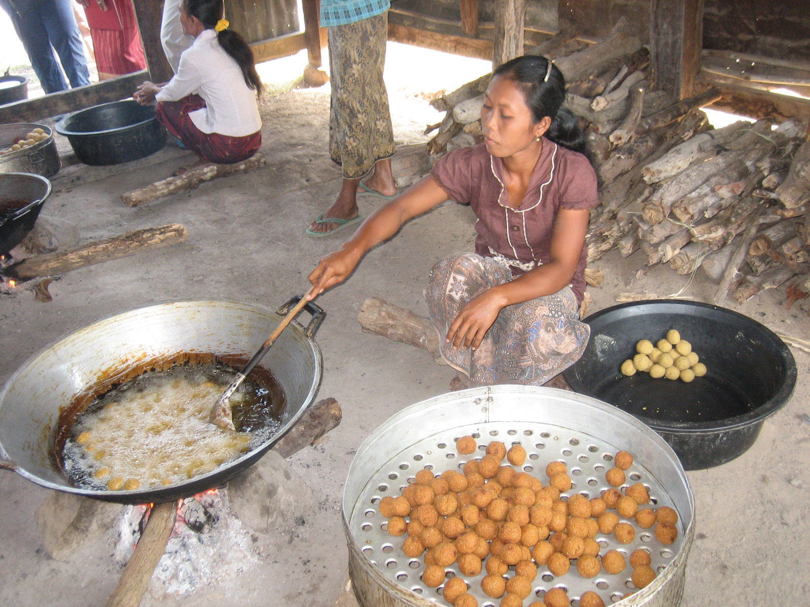These snacks are a corn-soy blend shipped in from the United States and sponsored by the US McGovern-Dole Act. Food is provided in schools in rural Laos to encourage attendance and enrollment in school. Thousands of children benefit from this program.
Source: Photo courtesy of Prince Roy, http://www.flickr.com/photos/princeroy/5457616535.
The Lao Kingdom coalesced in the 1500s and was eventually absorbed by the Kingdom of Siam, which thrived during the eighteenth and nineteenth centuries. France muscled in during the colonial era and created a French Indochina. Laos received independence from France in 1949. Laos is a rural country with about 80 percent of the population working in agriculture. Globalization has not yet been established in this country and infrastructure is less developed. Electricity is not available on a consistent basis and transportation systems are quite basic. There aren’t any railroads and there are few paved roads. Clean water for human consumption is not always available. The economy is based on agriculture, with some outside investments in mining and natural resources.
Two-thirds of the people in Laos are Buddhists. Animist traditions and spirit worship have the next highest percentage of followers. Muslims and Christians make up a small percentage of the population. Lao make up the largest ethnic group and 70 percent of the population. Other ethnicities include the Hmong and mountain tribal groups, which can be found in various remote regions of the country. The remoteness and rural heritage of the many tribal people have started to attract tourism. Tourism has increased in recent years, partially due to the Chinese government allowing its citizens to travel outside their borders from China into Laos. Laos has two UNESCO World Heritage Sites: the historic town of Luang Prabang, and the southern site of Wat Phou (Vat Phu), which is an ancient Hindu temple complex.
Laos is a poor country. It has fewer employment opportunities for its citizens than other developing countries have. The one-party Communist political system of the Cold War has been decentralizing control and working to encourage entrepreneurial activities. Foreign investments are increasing in the areas of mining, hydroelectric production, and major construction projects. The World Bank and other agencies have supported efforts to improve infrastructure and provide opportunities for the people of Laos. China has been partnering with the Laotian government to help build rail transport in the country. These efforts have assisted in reducing poverty and increasing the economic and physical health of the country.
Cambodia is about the same size in area as the US state of Missouri. The population in 2008 was estimated at 14.5 million. The Khmers created the Angkor Empire, which reached its peak between the tenth and thirteenth centuries. Preceding the colonial period, the Angkor Empire entered into a long era of decline. France took control of the region in the latter part of the seventeenth century. Japan took control of the region before World War II and then relinquished it when they surrendered to end World War II. France regained control of Cambodia after the Japanese army was defeated. Cambodia finally received independence from France in 1953.
To understand Cambodia, one has to understand its recent history. This country has undergone some of the most extreme social transitions in modern times. The Khmer Rouge, under the leadership of Pol Pot, turned society upside down, giving the country a legacy that it will carry forward as integration continues into the world community.
Between 1969 and 1973, while the United States was fighting the Vietnam War, US forces bombed and briefly invaded Cambodia in an effort to disrupt the North Vietnamese military operations and oppose the Khmer Rouge. Millions of Cambodians were made refugees by the war, and many ended up in Phnom Penh. The number of casualties from the US bombing missions in Cambodia is unknown. The US war in Vietnam thus had spilled over into Laos and Cambodia and advanced the opportunities for the Khmer Rouge regime to gain power. Pol Pot’s Communist forces of the Khmer Rouge finally captured Cambodia’s capital of Phnom Penh in 1975. The Khmer Rouge evacuated all cities and towns and forced the people to move to the rural areas. The country’s name was changed to Democratic Kampuchea. China’s Great Cultural Revolution and the Great Leap Forward disaster were influential for Pol Pot’s radical experiment. Since Vietnam was supported by the Union of Soviet Socialist Republics (USSR), the Khmer Rouge looked to China for arms and support.
Pol Pot was creating an agricultural model for a new country based on eleventh-century ideals. People in urban areas were forcibly marched off into the countryside for labor in agriculture. Anyone who resisted or even hinted at dissent was killed. All traces of Westernized ideas, technology, medical practice, religion, or books were destroyed. Thousands of people were systematically killed in an attempt to bring into being a rural agrarian utopian society. The thousands upon thousands who were systematically eliminated gave rise to the term Killing FieldsRural areas in Cambodia where Pol Pot’s Khmer Rouge killed tens of thousands of people and buried them in mass graves often dug by the same people who were buried there before they were killed., meaning fields where massive groups of people were forced to dig their own graves and then were killed. The mass killings were reminiscent of those carried out by Hitler, Stalin, and Mao. Pol Pot’s regime also targeted ethnic minority groups. Muslims and Chinese suffered serious purges. Professional, educated people, such as doctors, lawyers, and teachers, were also targeted for execution. According to some reports, the very act of wearing eyeglasses was a death sentence as it was a symbol of intellectualism. In a country of eight million in 1970, more than two million people were executed or died as a result of Pol Pot’s policies. The total number will never be known. Hundreds of thousands became refugees in neighboring countries.
Figure 11.7 Skulls of the Victims from the Killing Fields of Pol Pot and the Khmer Rouge in Cambodia from the 1970s
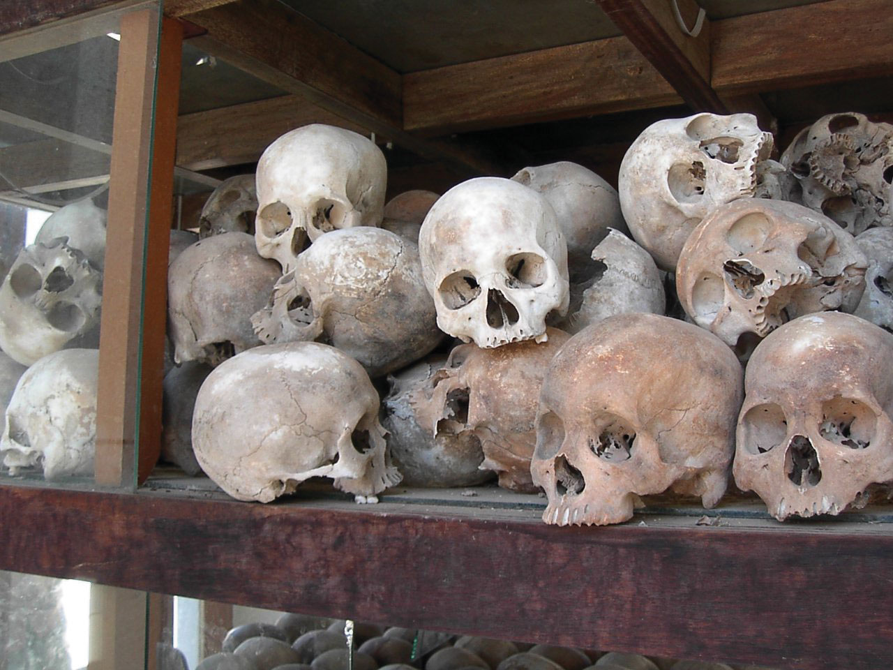Source: Photo courtesy of Adam Carr, http://commons.wikimedia.org/wiki/File:Choeungek2.JPG.
By 1978, the Khmer Rouge was isolated in the countryside. Vietnamese forces controlled the urban areas. A decade of civil war and unrest followed. Paris peace talks, cease-fires, United Nations–sponsored elections and coalition governments have since helped provide political stability. Pol Pot died under unclear circumstances in 1998 while being held under house arrest. As of 1999, the Khmer Rouge elements that were still in existence had surrendered or were arrested. Many of the Khmer Rouge leaders were charged with crimes against humanity by United Nations–sponsored tribunals.
Cambodia is working to become a democratic and open country with established trade relationships with global markets. The people have struggled to create a stable society that can rebound from their legacy of turmoil and conflict. The country’s population is relatively young. More than half the population is under age twenty-five; one-third is under fifteen. The rural areas and the generations who remain there continue to lack the basic amenities of modern society. Education, electricity, and modern infrastructure are lacking. More than half the population works in agriculture. Since less than 25 percent of the population lives in cities, Cambodia is likely to experience a high rural-to-urban shift in its future.
People are returning to religious practices that were banned during the Pol Pot era. Buddhism is the dominant religion of about 95 percent of the population. Small percentages of the population also practice Christianity, Hinduism, Islam, or tribal beliefs. There are at least twenty distinct hill tribes that hold to their own traditions and cultural ways. The country has historically been self-sufficient with food, but the rapid population growth, political instability, and lack of infrastructure are challenging the future of the country.
Agriculture has been the main economic activity, though textiles (clothing manufacturing) have increased in recent years because of the low cost of labor combined with an abundant workforce. The international business sector has sought to exploit this opportunity, but multinational corporations are hesitant to invest in a country that suffers from political instability or a high level of corruption within the public and private sector.
Cambodia has been attempting to build a sustainable economy. The textile industry is the number one source of national wealth. Sweatshops and low-tech manufacturing have begun to take root in the expanding capital city of Phnom Penh. Tourism is another sector that has experienced rapid growth. Though nonexistent in earlier decades, tourism has taken off. Cambodian tourism provides travelers with an experience that is more pristine and less commercialized. Tourism has been rated as the second-largest sector of the economy. One of the main sites that attract many visitors is the extraordinary ancient site of Angkor Wat (Angkor means “city” and Wat “temple”). This site is one of the best-preserved showcases of Khmer architecture from its early empire years. Angkor Wat is being developed as a major tourist attraction. The twelfth-century complex was first a Hindu site dedicated to Vishnu, and then it was converted to a Buddhist site. Angkor Wat has become an international tourist destination. It is one of the largest temple complexes in existence in the world and is a UNESCO World Heritage Site. The city of Angkor has been estimated to have been the largest city in the world at its peak. As many as a thousand other temples and ancient structures have been recovered in the same area in recent years.
Cambodia has pressing environmental problems. The country has the notorious designation by the UN as the nation with the third-highest number of land mines on Earth. Since 1970, more than sixty thousand people have been killed, and many more injured or maimed because of unexploded land mines in rural areas. The growing population, attempting to recover from decades of devastation, has cut down the rainforest at one of the highest rates in the world. In 1970, rainforests covered about 70 percent of the country. Today there is only about 3 percent of the rainforest left. A rise in the need for resources, along with illegal timber activities, has devastated the forests, resulting in a high level of soil erosion and loss of habitat for indigenous species. The loss of natural resources is likely to hinder the country’s economic growth.
Thailand is larger than Laos and Cambodia combined but smaller than Burma. The physical regions that make up Thailand include the mountainous north, where peaks reach up to 8,415 feet; the large southeastern plateau bordering the Mekong River; and the mainly flat valley that dominates the center of the country. The southern part of the country includes the narrow isthmus that broadens out to create the Malay Peninsula. The tropical Type A climate has dry and rainy seasons similar to Cambodia. The weather pattern in the main part of Thailand, north of the Malay Peninsula, has three seasons. The main rainy season lasts between June and October, when the southwest monsoon arrives with heavy rain clouds from over the Indian Ocean. After the rainy season, the land cools off and starts to receive the northeast monsoon, which is a cool dry wind that blows from November to February. Considered the dry season, its characteristics are lower humidity and cooler temperatures. From March to May, the temperatures rise and the land heats up. Then the cycle starts over again with the introduction of the rainy season. The weather pattern in the southern part of Thailand in the Malay Peninsula receives more rain throughout the year, with two rainy seasons that peak from April through May and then again from October through December.
Thailand was formerly known as the Kingdom of Siam. In 1932, a constitutional monarchy was established after a bloodless revolution erupted in the country. The name was officially changed to Thailand in 1939. The ruling monarch remains head of state but a prime minister is head of the government. Siam was never colonized by either the Europeans or the Japanese. The leaders of Siam played France and Britain against each other and remained independent of colonial domination. During World War II, the Japanese did extend influence in the region. Thailand briefly engaged the Japanese military in World War II but worked out an armistice that used the Japanese military to regain territories lost to Britain or France. At the same time, Thailand was working to support Allied efforts in the region.
About three-fourths of the population is ethnically Thai. There is a noticeable Chinese population and a small percentage of people who are ethnically Malay. There are various minority groups and hill tribes. The country’s official language is Thai. Buddhism is adhered to by about 95 percent of the population. The ruling monarch is considered the defender of the Buddhist faith. Southern Buddhism is fervently practiced here. Thailand does not use the Western Gregorian calendar. Thailand uses an official calendar based on an Eastern translation of the Buddhist era, which essentially adds 543 years to the Gregorian calendar. For example, when it was 2010 AD in the West, it was 2553 BE in Thailand.
There have been clashes between Thailand’s small Muslim minority groups in the south, which have been increasing since 9-11. Islamic influences have been increasing near the border with Malaysia, which is about 60 percent Muslim. The Buddhist government of Thailand has sought to keep extremist groups like Al-Qaeda from operating within its borders. A series of Muslim-inspired bombings in recent years have increased social tensions and brought more attention to the religious division in the south.
Thailand has an excellent record of economic growth and has been one of Southeast Asia’s best performers in the past couple of decades. Thailand is developing its infrastructure and has established measures to attract foreign investments and support free-enterprise economic activities. The recent slowdown in the global economy and internal political problems have caused a sharp downturn in Thailand’s economic growth. Nevertheless, Thailand remains a strong economic force and one of the best economies in the region. The positive indicators include a strong focus on infrastructure, industrial exports, and tourism.
Urbanization rates are increasing; at least one-third of the population lives in cities. Family size has fallen to lower than two children per family, while education rates have increased. The country has also tapped into its natural resources for export profits as the world’s third-largest exporter of tin and the second-largest exporter of tungsten. Light manufacturing has taken off and become a major component of the economy, accounting for about 45 percent of the gross domestic product (GDP). The country is a major manufacturer of textiles, footwear, jewelry, auto parts, and electrical components. Thailand has been the major exporter of rice in the world and has a strong agricultural base.
Thailand is a newly industrialized country and has all its bases covered to build national wealth: a balance of agriculture, extractive activities, manufacturing, and postindustrial activities (tourism). Thailand is considered the third-largest manufacturer of motor vehicles in Asia, after Japan and Korea. Vehicle producers from the United States and Asia are manufacturing large numbers of cars and trucks in Thailand. Toyota dominates the market in both truck and auto production. Truck production is augmented by Mitsubishi, Nissan, Chevrolet, Ford, and Mazda. Honda, from Japan, and the Tata Motor Corporation, from India, are expanding their operations in Thailand. Thailand is in a good position to advance its economy and shift the whole country into the next stage of development to become a major participant in the global economic marketplace.
The tourism industry has grown immensely in Thailand over the past few decades. Green and lush tropical mountain landscapes, the exquisite architecture of ancient Buddhist temples, and beautiful golden beaches along warm tropical coastlines make for an excellent tourism market. Some of the best world-class tropical beach resorts are located along the sandy and sunny shores of Thailand. The country is open to outsiders and has welcomed tourism as part of its economic equation. The relatively stable country provides a safe and exciting tourism agenda that has a global clientele. The downside of the thriving tourism industry is the sex trade. Relaxed laws on sexual activity have made Thailand a destination for people from around the world seeking “sex tours” and erotic experiences. Not surprisingly, a sharp increase in the number of individuals infected with sexually transmitted diseases has been documented. Approximately one million people in Thailand tested HIV positive in the mid-1990s. The sex industry has been big business for Thailand and at the same time has created an unfortunate negative stereotype for the overall tourism situation. There is much more to the tourism industry in Thailand than the sex trade.
The country of Thailand has the potential to recover from the global economic downturn and once again claim its role as an economic tiger of Southeast Asia. If political stability serves to enhance economic investments, the country will continue to experience economic growth. The low population growth is a model for other countries in the region. Thailand provides a good example of the theory that as a country urbanizes and industrializes, family size will usually go down. Thailand is also moving forward in the index of economic development. It is in stage 3, where there is a strong rural-to-urban shift in the population. The capital city of Bangkok has stage 4 development patterns and is an economic core area for the country and the region. As large as New York City, Bangkok has developed into the political, cultural, and economic center of Southeast Asia. Often referred to as the “Venice of the East” because of its city canals, Bangkok has become a global city with a population of more than eight million people officially and more than fifteen million unofficially.
The Union of Myanmar (Union of Burma) is the official name for Burma. Since 1989, the military authorities in Burma have promoted the name Myanmar as a conventional name for their state. The US government and many other governments have not recognized or accepted the name change. Some groups within Burma do not accept the name because the translation of Myanmar is also the name of an ethnic minority in Burma. The use of the name Burma or Myanmar is split around the world and within the country.
Burma is the largest country on the Southeast Asian mainland in terms of physical area. It is about the same size in area as Texas and had a population in 2010 of about fifty-four million. The country has a central mass with a southern protrusion that borders Thailand toward the Malay Peninsula. The northern border area between India and China has high mountains that are part of the Himalayas, with towering peaks extending to 19,295 feet. The Irrawaddy River cuts through the center of the country from north to south, creating a delta in the largest city, Rangoon (Yangon). Most of the country’s population lives along this river valley.
Figure 11.10 Burma (Myanmar): The Irrawaddy River and the North/South Layout

Source: Map courtesy of CIA World Factbook.
There are differences in physical landscape between the north and south. The northernmost area is mountainous with evergreen forests. Cool temperatures are found in the north and warmer annual temperatures are found in the south. To the west of the Irrawaddy River and north of Mandalay the land cover is mainly deciduous forests. The eastern region from Mandalay to the Laos border is scrub forests and grasslands. This area is considered the dry zone, with an annual rainfall of about forty inches. The more tropical south and coastal areas can receive higher levels of precipitation. The area around the core city of Mandalay was a major focus of agricultural development before British colonialism. Dryland crops were most common. During the colonial era, the British looked to the rich farmlands of the southern Irrawaddy delta and emphasized Rangoon as the center of their exploitations. Wetland rice is a major crop of the southern Irrawaddy basin. The southwest and the southern protrusion are mainly tropical evergreen forests. There has been oil exploration along the coastal regions of the Bay of Bengal and along the Andaman Sea.
The country was colonized by the British and was once a part of Great Britain’s empire in South Asia as a province of India. Burma was one of the most prosperous colonies of Britain until World War II, when the Japanese invaded and war devastated the region. Democratic rule existed from 1948 until 1962, when an authoritarian military dictatorship took over the country. A revolutionary council ruled the country between 1962 and 1974. This government nationalized most of the businesses, factories, and media outlets. The overall operating principle of the council was a concept called the Burmese Way of Socialism. This concept was based on central planning and Communist principles mixed with Buddhist beliefs.
Between 1974 and 1988, the sole political party of the country was the Burma Socialist Program Party, which was controlled by the same military general and his comrades who had been in control for decades. During this time, the rest of the world was advancing in technology and economic development and moving forward with advancements in health care and education. Burma remained an impoverished and isolated nation. A number of countries, including the United States, have trade restrictions with Burma. For decades, the authoritarian regime in Burma has been accused of serious human rights violations, which have largely been ignored by the outside world.
Protests against the military rule have always existed in Burma but have been suppressed by the armed forces and the authoritarian government. In 1962, the government cracked down on demonstrations at Rangoon University, resulting in fifteen students being killed and many others in need of medical attention. The military government has taken serious action against any antigovernment protest activities. By 1988, the people of Burma were taking to the streets with widespread demonstrations and protests against the government over claims of oppression, mismanagement, and lack of democratic reforms. A total crackdown on the people was implemented, with thousands of protesters killed. A new council led by a military general created the State Law and Order Restoration Council a year later. Martial law was imposed and even harsher policies were imposed on anyone opposing the government. This is when the name of Myanmar was first used for the country.
The name change and the military rule have not been universally accepted. The United States still refers to the capital city as Rangoon, not as Yangon. In 2006, military rulers moved the capital north to the city of Naypyidaw. The purpose of the move was to establish a forward capital and shift development and political energy more toward the center of the country, rather than along the coast. World nations are divided on the issues of how to deal with the changes and the military regime in Burma. The governments of some countries believe more sanctions should be implemented to force the leadership into compliance. Other countries believe sanctions are not effective against the government; that is, sanctions harm the people and do not affect the military leadership. Countries on this side of the equation believe that open trade is the best policy.
Figure 11.11
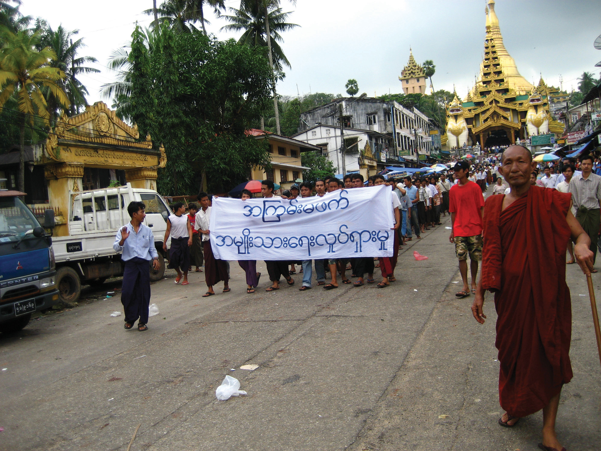Demonstrators Marching to Express Discontent with the Government of Rangoon (Yangon), 2007
The banner, written in Burmese, refers to a national movement to promote nonviolence. A Buddhist monk is in the foreground, and the Shwedagon Pagoda is in the background.
Source: Photo courtesy of racoles, http://commons.wikimedia.org/wiki/File:2007_Myanmar_protests_7.jpg.
Antigovernment protests erupted in 2007 when the military-ruled government allowed prices on fuel and energy to double and triple in price. Protesters were quickly and violently dealt with and many were arrested and jailed. Later that year, thousands of Buddhist monks led a peaceful protest to gain the government’s attention to make democratic changes. The demonstration ended in a renewed government crackdown. Another voice in the antigovernment demonstrations has been that of opposition leader Aung San Suu Kyi, a UN worker in the early 1960s and a Nobel Peace Prize winner in 1991. Her opposition to the military rule has led to imprisonment and house arrest for decades. She has been a symbol of the opposition and hope for democratic reforms. In 2010, Aung San Suu Kyi was at long last released from house arrest and allowed more freedom of movement under government restrictions.
Burma has been placed in the same category as North Korea and Somalia in terms of authoritarian rule, lack of human rights, and stagnant economy. Economic conditions are poor. The military rulers have gained control of the main income-generating enterprises in the country, including the lucrative drug trade from the prime opium growing region of the northern Golden TriangleBorder region between Burma, Thailand, Laos, and Vietnam that has traditionally been a major opium growing area for the world., where Burma borders Laos and Thailand. All factors seem to indicate an increase in opium production in recent years. Precious gemstones such as rubies, sapphires, and jade are abundant in Burma. Rubies bring the highest incomes. Burma produces about 90 percent of the world’s supply, with superb quality. The Valley of Rubies in the north is noted for quality gem production of both rubies and sapphires. Most of the gems are sold to buyers in Thailand. All the profits go to Burma’s military rulers in the government, and since there is a high level of corruption and mismanagement within the government and business, the income from the gems produces limited economic development for the main population and discourages foreign investment in the country. Burma has become one of the poorest countries in Southeast Asia. China has emerged as the main trading partner with Burma and has been propping up the dictatorial military regime. China supplies the regime with arms, constructs many of the infrastructure projects, and supplies natural gas to the country.
Burma is ethnically diverse. Though it is difficult to verify, the government of Burma recognizes one hundred thirty-five distinct ethnic groups within its borders. It is estimated that there are over a hundred different ethnolinguistic groups in Burma. About 90 percent of the population is Buddhist. This high level of diversity can allow for strong centrifugal forces that are not generally conducive to unity and nationalism. The heavy emphasis on the national military is one of the only centripetal forces within the population, even though the military leadership is also looked at with distain by those desiring more openness and democratic conditions.
Identify the following key places on a map:
The insular region of Southeast Asia includes the countries of Malaysia, Singapore, Brunei, East Timor, Indonesia, and the Philippines. Of the Southeast Asian countries, East Timor most recently gained its independence, as was mentioned in the previous lesson. In comparing these island nations, extensive diversity in all aspects will be found. There are major differences in cultural, economic, and political dynamics, and in the ethnic groups that make up the dominant majorities in each. There is also a high level of linguistic and religious diversity. The physical geography varies from island to island; some have high mountain relief and others are low-lying and relatively flat. Active tectonic plate action in the region causes earthquakes and volcanic activity, resulting in destruction of infrastructure and loss of life; both acutely impact human activities.
Economic forces continue to prompt the countries of Southeast Asia to enter into trade relationships that integrate them with global networks based on dependency and reliance. The old colonial powers may no longer control them politically but may affect them economically. The new dynamics of corporate colonialism, with their economic power located in the core economic regions, still seek to exploit the countries of Southeast Asia for their labor and resources. These Asian nations are working to develop their own economies and use their own labor and resources to gain national wealth and increase the standard of living for their people. Each country has to contend with globalization forces within the international network of economic relationships.
Malaysia is a country made up of various British colonies that came together as a federation and then became an independent country. Britain started establishing colonies in the region in the late 1700s. The two main areas include the western colonies on the Malay Peninsula and the eastern colonies on the island of Borneo. The western settlements were part of the Malay Peninsula, which included the colonies of Pinang and Singapore. Eventually, the British took control of the eastern colonies of Brunei, Sarawak, and Sabah on the island of Borneo. In 1957, the western colonies on the mainland peninsula broke from their British colonizers and became an independent country called the Federation of Malaya. In 1963, the British Borneo colonies of Sarawak and Sabah joined the Federation of Malaya to form the current country, which is called Malaysia. In 1965, Singapore broke off from Malaysia and became an independent country. Brunei, which was still a British protectorate, became independent in 1984.
Malaysia has two main land areas separated by the South China Sea. The regions of Sarawak and Sabah, on the island of Borneo, are called East Malaysia; the mainland on the Malay Peninsula is called West Malaysia. These regions have similar physical landscapes, which include coastal plains with nearby densely forested foothills and mountains. The highest mountains, rising 13,436 feet, are in East Malaysia on the island of Borneo. Located near the equator, Malaysia has a tropical Type A climate with monsoons regularly occurring from October to February.
Figure 11.12 Provinces in East and West Malaysia

Malaysia’s culture is diverse in that several major religions are practiced within its borders. Islam is considered the official religion and is supported by at least 60 percent of the population. About 20 percent of the people are Buddhists, 10 percent Christians, and 6 percent Hindu. The remaining percentages of the population include traditional Chinese religions and local tribal beliefs. In this Islamic country, there are concerns that Muslims get preferential treatment by government programs and policies. There are even special judicial legal courts for Muslims only to work out issues regarding marriage, custody, inheritance, or other conflicting Islamic issues regarding faith and obligation. This court only hears Islamic issues and no other legal matters. There have been movements by minority extremist groups that would like to see Malaysia shift toward a true Islamic state, complete with the Sharia Criminal Code as the law of the land. The movement, however, has been cracked down on by the government. Since the 9-11 incident in the United States, there has been more concern about extremist religious views.
People of Malay ethnic background make up more than 50 percent of the population. People of Chinese descent are the second-largest group at about 24 percent. An additional 11 percent of the population is made up of indigenous groups. During British colonialism, a number of people from South Asia were brought to Malaysia. For example, Tamils were brought from India to work the plantations. Their Hindu beliefs were infused into the culture and some Tamils also converted to Christianity. Sikhs were brought from South Asia to help Britain run the country as police, soldiers, or security officers. The Sikhs who came brought their religion with them, which added to the multireligious dynamics of the country.
Figure 11.13 The Tuaran Road of Kota Kinabala City in Malaysia during a Time of Slow Traffic
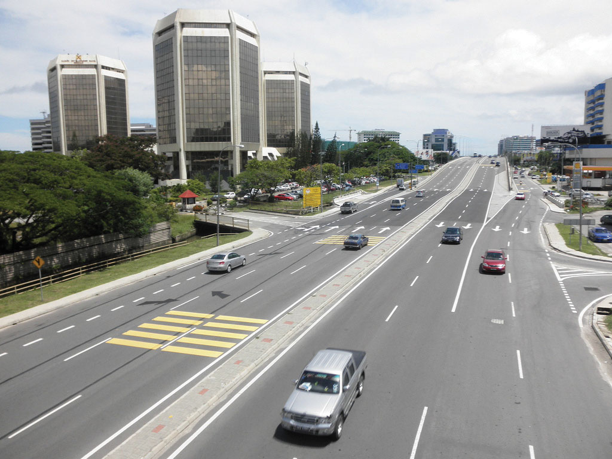Notice that the cars are driving on the same side of the road as they would be in Great Britain, Malaysia’s former colonizer.
Source: Photo courtesy of thienzieyung, http://www.flickr.com/photos/thienzieyung/4693359106.
Malaysia’s diverse ethnic and cultural mix often results in strong centrifugal forces that push and pull on the societal dynamics of the country. China has been active in the business community and has established strong economic ties with regional countries that have Chinese populations. The single largest minority group in the province of Sarawak on Borneo is Chinese. As a minority group, Chinese citizens of Malaysia have felt discrimination. Since the official language is Malay and the official religion is Islam, there have been concerns about discrimination against all minority groups. Working through the cultural and ethnic diversity has been a major challenge for the country. Each minority religious or ethnic group desires to celebrate its own special holidays. For example, there is the usual New Year’s celebration on January 1, and then there is the traditional fifteen-day Chinese New Year celebration celebrated at a different time of the year. Sikhs celebrate the Sikh New Year. Buddhists celebrate a holiday in honor of the life and enlightenment of Buddha. Christians celebrate Christmas and Easter. Many other holidays of significance are respected or honored by various minority groups.
Malaysia has rapidly advanced its economy in recent decades and is modernizing its infrastructure—roads, bridges, highways, and urban facilities. In the capital city, Kuala Lumpur, Malaysia built a modern central business district with a twin high-rise office building claimed to be the world’s tallest at the time of construction. Before the global economic downturn that started in 2007, Malaysia had developed a fast-growing economy and was industrializing at a rapid rate. Malaysia has taken advantage of its location on a major shipping lane and has shifted to manufacturing as an important sector of its economy. The country has been a leader in the export of natural resources such as tin, rubber, and palm oil and has developed its agricultural and extractive sectors to gain income. The 1980s and 1990s were prosperous times for the country and it matured its manufacturing base from light textiles into electronics and heavy industries.
One aspect of the country that is looming on the horizon and may cause problems is the high population growth rate. In 2010, Malaysia’s population was estimated at more than twenty-five million, with a doubling time of about forty years. Though the country is 70 percent urban, family size (fertility rate) is still at about 3.0, which indicates an increasing population growth pattern. One-third of the population is under the age of fifteen. Malaysia is one case where the general principle that if a country urbanizes and industrializes the family size will go down has not taken place fast enough. The fertility rate has dropped from 5.0 to 3.0, but it needs to get below a rate of about 2.0 if the country is going to successfully stabilize its population growth. Unless the country addresses this population growth, the demand for resources might outstrip economic progress in the future.
Under British colonial rule, the island of Singapore was included in the Malaysian federation. It broke away and became independent in 1965. It is a small island measuring about thirty miles long at its widest point. Singapore is about two hundred forty square miles in area. Singapore’s most valuable resource is its relative location. Singapore is similar to Hong Kong in its development. With a good port, Singapore is a hub for ships sailing between Europe and China. It serves Southeast Asia as an entrepôtA break-of-bulk point where large shipments arrive and are broken down into smaller shipments for delivery to local regions on smaller transportation systems., or break-of-bulk point, where goods are offloaded from large ships and transported to smaller vessels for distribution to the Southeast Asian community.
Figure 11.14 Singapore and Neighboring Countries
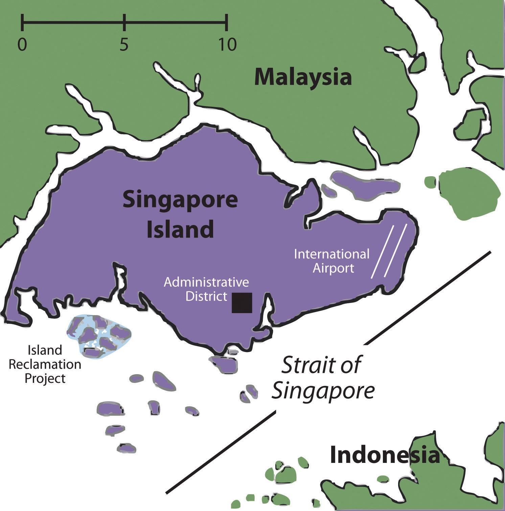Singapore has made good strategic utilization of its geographic location by serving as a distribution center for goods and materials processed in the region. Crude oil from Indonesia is unloaded and refined here. Raw materials are shipped in, manufactured into finished products, and then shipped out to global markets. Since Singapore is small, it has had to concentrate on manufacturing goods that provide for optimal profits. As an economic tiger, Singapore has transitioned through the same stages as Taiwan, South Korea, and Hong Kong to become an economic power in Southeast Asia.
To keep labor costs low, initial manufactured products were textiles, clothing, and cheap goods. As incomes and labor skills rose, so did the complexity of the manufactured goods. The government of Singapore has targeted certain types of products to ensure a high profit margin and a global market need. This has included automation equipment, biotechnology, and high-end information technologies. Singapore doesn’t manufacture automobiles but it does manufacture automation robotic components that most modern auto manufactures will purchase and use. Medical technology is expensive and is in high demand the world over. Singapore is targeting this market. The information age has spawned new technologies that are evolving rapidly and, once again, Singapore has been at the center of this industry. Singapore has been a center for the production of computer disc drives for a multitude of global corporations.
Singapore Island is a swampy place with no natural resources. All production components, food goods, construction materials, and energy must be imported. Importing everything has raised the cost of living. To compete with the other Asian economic tigers in the global marketplace, Singapore has implemented severe control measures on its operations. There are harsh penalties for criminal activities and for even misdemeanor offenses. Singapore is a safe place to live because of its strict state rules. It has an authoritarian government, which strives to create an attractive place for international corporations to operate. One of the objectives is to eliminate corruption and establish a business-friendly environment.
The government of Singapore has entered into trade agreements with two of its neighbors to provide raw materials and cheap labor. A trade triangleThree-way trade agreement between Singapore, Malaysia, and Indonesia where each country contributes what it can provide and receives what the other countries have to offer. has been established between Singapore, Malaysia, and Indonesia. Malaysia and Indonesia provide Singapore with raw materials and cheap labor; Singapore provides its neighbors with technical know-how and financial support. Everyone benefits. Singapore is an excellent example of the upper end of the economic spectrum in Southeast Asia. Countries like Laos or Vietnam would be at the opposite end, since they have a largely rural population based on agriculture that is just beginning to shift to the cities with industrialization. Singapore is already 100 percent urban with high incomes based on high-tech manufacturing and processing of raw materials. Singapore is an economic hub for Southeast Asia, complete with global airline connections and is located on a major shipping lane. Singapore’s world-class port is one of the busiest in Asia. The rest of Southeast Asia is somewhere in between these two ends of the spectrum as far as economic development is concerned.
The country of Indonesia is the world’s largest archipelago state, consisting of more than 17,500 islands, about one-third of which are inhabited. Indonesia is the sixteenth-largest country in the world by area. The combined area of all the islands and regions of Indonesia would equal about the size of the country of Mexico. The country shares land borders with the Borneo side of Malaysia, the western half of the island of Timor, and the western portion of the island of New Guinea, which is shared with the country of Papua New Guinea.
The country’s location on both sides of the equator provides a tropical Type A climate, complete with a monsoon season. Average rainfall can vary from seventy to two hundred forty inches per year. The highest mountain is in West Papua and rises to about 16,024 feet. Indonesia is located on the Pacific Rim, where tectonic plate activity produces earthquakes and volcanic activity. The country is home to over one hundred fifty active volcanoes, including two of the most famous ones, Krakatoa and Tambora. Both had devastating eruptions in the past two centuries. One of the most violent volcanic explosions ever recorded in human history came from Krakatoa, which is located between the islands of Java and Sumatra. A series of eruptions in 1883 were heard as far away as the coast of Africa. Shockwaves reverberated around the globe seven times. Ash erupted into the atmosphere to a height of about fifty miles. The official death toll was 36,417, but estimates from local sources place it as high as 120,000. Global temperatures fell by about 2 °F, and weather patterns were disrupted for the next five years. Krakatoa remains active. Over the past few decades, the volcanic peak has been growing at the average rate of about five inches per week.
Figure 11.16 Major Islands and the Thirty-Three National Provinces of Indonesia
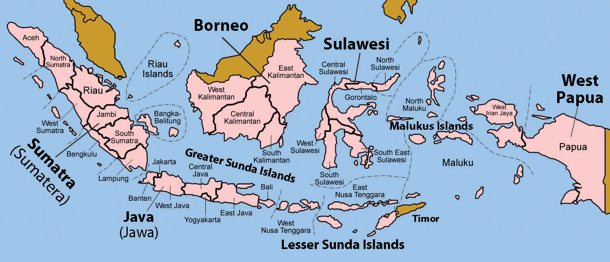Source: Updated from map courtesy of Golbez, http://commons.wikimedia.org/wiki/File:Indonesia_provinces_english.png.
The tropical climate and the archipelago nature of the country provide for enormous biodiversity within the environment. Second only to Brazil in its biodiversity, Indonesia is host to an enormous number of unique plants and animals. The habitats of many of these creatures are being encroached upon by human activity. The remote islands have more of a chance of escaping habitat devastation and remaining intact, but agricultural and extractive economic activities have converted much of the natural environment into a cultural landscape that is not conducive to environmental sustainability.
Animals such as orangutans are losing their natural forests and may become extinct if current trends continue. The timber industry has brought about deforestation. Slash and burn agriculture has destroyed forest habitat, and human development patterns such as roads and urbanization have altered the ecosystems of the region. According to recent reports, Indonesia is one of the largest emitters of carbon dioxide in the world because of the high number of forest fires set each year. In 2009, the United States brokered a deal with Indonesia to forgive thirty million dollars of its debt if the country would work to protect forests on the island of Sumatra, which is home to endangered indigenous animals such as tigers, elephants, rhinos, and orangutans.
In 2010, the estimated population of Indonesia was about 245 million. Indonesia has the fourth-largest population of any country in the world, after the United States, India, and China. Indonesia also has more Muslims than any other country in the world. More than half the population of Indonesia lives on Java, the island where Jakarta, the capital city, is located. Java is the most populous island in the world, and has a population density of more than 2,400 people per square mile. Java is the size in area of the US state of Louisiana. Java has 135 million people, whereas Louisiana has 4.5 million people. Jakarta is a world-class city that is larger than New York City and encompasses a large metropolitan area, complete with many manufacturing centers, business complexes, and housing districts.
The many islands of Indonesia are home to a large number of diverse ethnic and religious groups that vary as widely as any Southeast Asian nation. There may be as many as three hundred different and distinct ethnic groups in Indonesia. Many of the ethnic groups are further divided by islands or distance. More than two hundred fifty separate languages and hundreds of additional dialects are spoken. There are an estimated seven hundred fifty languages spoken on the island of New Guinea itself, with hundreds of them spoken on the Indonesian side of the island, in a population of less than three million. The most prevalent language group in the country as a whole is Javanese, which is spoken by about 42 percent of the population. Javanese includes the official language of Indonesian, which is taught in schools and used in business and politics as the lingua franca of the country. Many people speak more than one language or even a number of languages to communicate throughout the country.
Islam was diffused to Indonesia in the thirteenth century and by the sixteenth century had become the dominant religion. The Indonesian constitution allows for religious freedom, although more than 85 percent of the population follows Islam. There are at least four other religions that are officially recognized: Christianity (both Protestantism and Roman Catholicism), Hinduism, Buddhism, and Confucianism. Since Islam is followed by such a large percentage of the population, the other religions do not carry the same influence. Regional and ethnic differences play a role in the varied religious dynamics. The island of Bali, for example, is home to a majority Hindu population. Most of the Buddhists are ethnically Chinese, and they only make up a small percentage of the population. Christians and Muslims have had conflicts on the island of Sulawesi. It is common to find the practice of these religions less than orthodox in the more rural communities of the country.
In spite of the diversity within the population, the country of Indonesia has established a substantial degree of nationalism as a centripetal force that holds the country together. There is a relatively high degree of stability in spite of the surface tensions or ethnic and religious conflicts that may erupt. An example of the social tensions is demonstrated in the case of Chinese citizens of Indonesia, who only make up about 1 percent of the population but impart a substantial influence over the privately owned business sector of the economy. This seemingly inequitable relationship has resulted in considerable resentment by other portions of the population, often with violent results. The many islands have become natural divisions between cultural groups.
Some of the islands—or portions of them—have attempted to break away in a devolutionary manner and become independent countries. Just as East Timor became independent, the most western province of Aceh on the island of Sumatra had a similar movement toward independence. West Papua on the island of New Guinea has also had an independence movement. The Aceh situation was negotiated out while the West Papua movement has been suppressed by military and political force. Many of the islands possess large amounts of natural resources, so the country of Indonesia does not want to lose these national assets that could prove valuable in gaining wealth for the future. It is not easy to create national unity with such a diverse population scattered throughout such a large archipelago.
Agriculture has been the historic base of the Indonesian economy. In 2010, it accounted for about 13 percent of the nation’s gross domestic product (GDP). Agriculture is the largest employment sector—approximately 42 percent of the workforce. This equates to more than half of the population being rural. Many of the agricultural methods in rural areas are traditional; for example, farmers use water buffalo or oxen for tilling the land. The tropical climate and adequate rainfall provide for multiple crops of rice per year in many areas. Spices, coffee, tea, palm oil, and rubber are also produced in substantial quantities.
Industries are an important building block for how a country gains wealth. In the case of Indonesia, industry accounts for about 40 percent of its GDP and employs about 20 percent of its workforce. Major industries include oil, natural gas, mining, and textiles or clothing manufacturing. Indonesia’s economy has been affected by global markets, but in 2005 still managed to run a trade surplus. Japan has been its main trading partner, and China has also been a major supplier of imported goods. Indonesia has been taking advantage of the trade triangle it has with its neighbors, Singapore and Malaysia, to increase its import and export trade activities.
The political background of Indonesia is similar in dynamics to many of its neighbors. Colonized by Europeans, Indonesia was previously called the Dutch East Indies, which explains why the islands of the Caribbean were called the West Indies. The Dutch colonized Indonesia in the early seventeenth century but had to relinquish possession of the archipelago to the Japanese in World War II. In 1945, after the Japanese surrendered, Indonesia declared its independence, which was finally granted in 1949 after much negotiation. The country’s government quickly moved toward authoritarian rule.
During a fifty-year time period, there were only two authoritarian leaders: Sukarno (1949–68) and Suharto (1968–99). Near the end of Sukarno’s rule, there were violent conflicts between Sukarno’s military and the Communist Party of Indonesia, which resulted in more than five hundred thousand deaths. Suharto’s regime was credited for substantial economic growth but was also accused of serious corruption and the repression of opposition political voices. Since 1999, Indonesia has conducted free parliamentary elections and is now considered the third-largest democracy, after India and the United States.
There are noticeable similarities between the oil-rich sheikdoms of the Persian Gulf region in the Middle East and the small sultanate of Brunei on the northern coast of Borneo. Bordered by Sarawak, the sultanate is actually two small separate regions along the coast of the South China Sea. The former British protectorate of Brunei is today a major oil and natural gas exporter. It provides a high standard of living for its small population. The compact country is about the size of the US state of Delaware. The country’s population for 2009 was listed at about 388,000. Brunei is attracting immigrants seeking opportunities and advantages. It is called a sultanate because the kingdom has been ruled by sultans (rulers) from the same family for the past six centuries.
Figure 11.18 Brunei
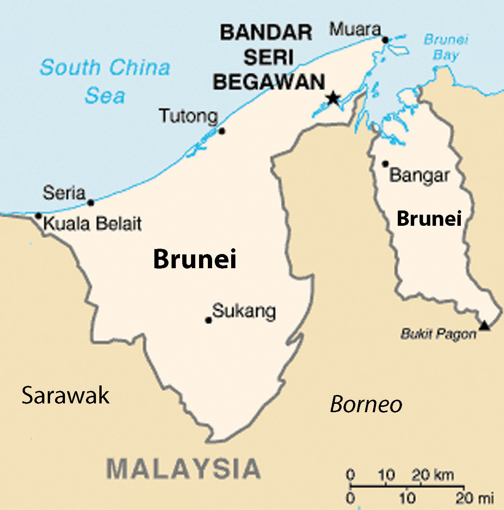Source: Updated from map courtesy of CIA World Factbook.
The main ethnic groups in Brunei are Malay, at 66 percent, and Chinese, at 11 percent. Brunei is an Islamic State with Islam as its state religion. About two-thirds of the population is Muslim. Buddhism is the second-most popular religion. The ruling sultan is not only head of state but also prime minister of the government and leader of the Islamic faith. Similar to states in the Middle East where Islam is the official religion, alcohol is banned and the public consumption or sale of it is illegal. Prohibition against alcohol has eliminated the establishments of pubs and nightclubs. Non-Muslims and visitors to the country can legally hold small quantities of alcohol for personal consumption.
The people of Brunei have a high standard of living, with the availability of modern amenities. The government has been concerned about integrating the country into the global economy. Natural gas and crude oil bring in about 90 percent of exports and just over half of the GDP. Education and medical care is free. Food, housing, and rice farming are subsidized by the state. The state has been working to expand the economy beyond natural gas and oil. Agricultural production has been increased and unemployment has been a major focus. The wealthy emirate has also been developing its tourism sector and the financial and banking industry.
Brunei may have to take a lesson from the United Arab Emirates (UAE)—that is, to work to develop a free trade zone to attract international trade—if the country wants to continue to gain wealth once the oil and natural gas run out. It has an excellent location on the South China Sea but would have to compete with the established economic tigers of Singapore and Hong Kong as well as the other rising urban centers in the region, such as Kuala Lumpur or Bangkok.
Located on the eastern side of the Southeast Asian community is the archipelago state of the Philippines. With more than 7,100 islands, many volcanic peaks, and an expanse of coastal waterways, the Philippines is home to more than ninety million people in a combined land area about the size of Arizona. The Philippines were a Spanish colony. The name is taken from Spain’s sixteen-century King Philip II. Spain relinquished its claim on the Philippines to the United States in 1898 after its defeat in the Spanish-American War. The people of the Philippines wanted independence at that time and fought a bitter war with the United States in which more than a million people died. The United States allowed the Philippines to become a commonwealth in 1935. The independence movement was placed on hold while the Japanese invaded and controlled the Philippines during World War II. After the war was over, the United States granted the Philippines their independence in 1946.
The islands of the Philippines are of volcanic origin. They are mainly mountainous and covered in tropical rainforest. The highest mountain, at 9,692 feet, is Mt. Apo, which is located on the southern island of Mindanao. The Philippines has a number of active volcanoes. The northern island of Luzon is home to the Taal Volcano, Mt. Pinatubo, and Mt. Mayon. The Pacific tectonic plate reaches the southern edge of the Philippine plate where it meets up with the Eurasian Plate. The juncture of tectonic plates creates a similar situation to that of Tokyo, which is at the opposite end of the Philippine plate. Active seismic forces result in many earthquakes. As many as twenty earthquakes a day can be registered here, though many are too weak to be noticed. In 1990, an earthquake on the island of Luzon registered at a magnitude of 7.8 and killed more than 1,621 people, causing extensive damage.
Figure 11.19 Ash Plume from Mt. Pinatubo during 1991 Eruption
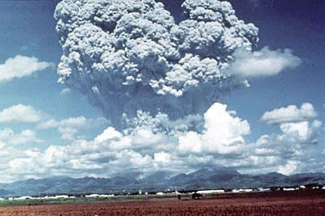The island of Luzon in the Philippines has a number of active volcanoes. Ash from Mt. Pinatubo caused so much damage that it resulted in the permanent closure of major US military bases in the Philippines.
Source: Photo courtesy of USGS, http://pubs.usgs.gov/fs/1997/fs113-97.
Luzon’s Mt. Pinatubo volcano has been active in recent years. Before 1991, the mountain attracted little attention, was heavily forested, and was home to tribal indigenous people. The volcano had a colossal eruption in 1991 that was recorded as the second largest in a century, after Alaska’s 1912 Novarupta eruption. Mt. Pinatubo began giving signs of an eruption, which were heeded by the government. Thousands of people were evacuated from the area, which saved many lives. The eruption caused billions of dollars in damage. More than eight hundred people were killed, and more than two million were directly impacted. The eruption destroyed more than eight thousand homes and the overall effects of the volcano were felt around the world.
Mt. Pinatubo’s eruption forced billions of tons of magma, ash, sulfur dioxide, minerals, and particulates into the atmosphere and onto the earth’s surface. The sun was blocked out, temperatures dropped, and ash piled up in nearby areas, causing extensive damage to roofs, roadways, and agricultural lands. The damage from the eruption was amplified by the fact that a full-scale typhoon hit the country on the same date, bringing torrential rainfall and wind that mixed with the ash in the air to create extremely dangerous environmental conditions. The damage had a massive impact on the entire economy of the Philippines.
The eruption severely damaged civilian infrastructure and US military bases in the region. The Subic Bay Naval Base was fifty miles to the southwest of Mt. Pinatubo’s summit, while Clark Air Base was less than sixteen miles to the east. Enormous clouds of ash covered everything. As a result of the damage to the operations at the bases, the United States Air Force evacuated and moved all air base personnel and military assets to bases in Guam, Okinawa, or Hawaii. The United States ultimately abandoned Clark Air Base, while Subic Bay reverted to the Philippines. There are thirty-seven volcanoes in the Philippines, of which eighteen are still active. Mt. Mayon is the most active volcano at the present time. It has had forty-seven eruptions in recorded history. The eruption in 1993 killed sixty-eight people and caused the evacuation of sixty thousand more.
Earthquakes and volcanoes are not the only serious natural concerns of the Philippine Islands; they are also directly in the center of the Western Pacific’s major typhoon belt. As many as twenty typhoons occur yearly in the area of the islands, and as many as half hit the islands directly. The 1991 typhoon Thelma/Uring killed as many as eight thousand people. The 1911 typhoon dumped over forty-six inches of rain in a twenty-four-hour period. Flooding is usually the main problem with typhoons and is the number one killer related to typhoon deaths. For more information, see Chapter 5 "Middle America", Section 5.5 "Tropical Cyclones (Hurricanes)". Typhoon activity also brings precipitation to the islands and the region. The Philippines are in the major path of typhoons in the Pacific and will continue to combat the effects of these powerful forces of nature.
The Philippines can be divided into three main geopolitical regions: Luzon, Visayas, and Mindanao. The northern island of Luzon is home to the nation’s national capital region with Quezon, the largest city, and Manila, the capital. Both cities are a part of metropolitan Manila, which has a population of more than twenty million. The northern island of Luzon is home to half the population of the country. The central Philippines consists of the Visayas Island group, including the islands between the Sulu Sea and the Philippine Sea. The southern region of the country is anchored by the large island of Mindanao.
Figure 11.20 The Three Main Regions of the Philippines
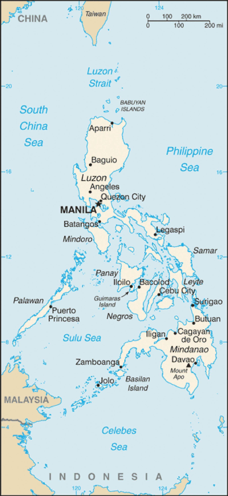Source: Map courtesy of CIA World Factbook.
The government of the Philippines is a constitutional republic with an elected president. With independence in 1946 came various leaders who have shaped the political landscape of the Philippines. After recovering from the devastation of World War II, the country prospered during the 1960s and showed positive economic gains. The political scene entered a difficult political era with the election of President Ferdinand Marcos in 1965, which turned into an authoritative dictatorship. During his time in power, the economy became sluggish and social unrest began to arise in opposition to his leadership.
Barred by law from being elected for a third time, Ferdinand Marcos declared martial law in 1972 under the premise that there was too much political conflict with Communist elements and Islamic insurgencies. Marcos ruled with his wife Imelda Marcos until 1986, when conditions worsened and the two were implicated in the assassination of opposition leader Benigno Aquino. Corruption, vote rigging, and the dictatorial actions of President Marcos caught up with him through mass protests, which eventually led to his removal from office. He left the Philippines for his exile in Hawaii. It was later alleged that during his twenty years in office, Ferdinand and Imelda Marcos had embezzled billions of dollars of public funds and moved them to bank accounts in Switzerland, the United States, other countries, and into fictitious money-laundering corporations. Ferdinand Marcos died of illness in 1989 in Honolulu.
Imelda Marcos returned to the Philippines to run for public office and even attempted a failed run for the presidency. Imelda was known for her thousands of shoes, which she had acquired while in power. Many of them are in a shoe museum in the Philippines. She was also known for her extravagant spending trips around the world. Several different political leaders have come to power since the Ferdinand Marcos era. Political stability has been difficult to achieve. The national leadership has faced Islamic insurgencies, attempted coups, corruption in the government, and a high national debt. These issues continue today but a modest level of stability has encouraged economic growth.
The Philippines is a diverse country with hundreds of ethnic groups. Many tribal groups as well as a large number of immigrants from Asia, Spain, and the United States have made the Philippines home. Together with Spanish influence, mixed ethnic groups have been created. They are an example of the confluence of cultures that make up the country. The Philippines is the only country in Asia where Roman Catholicism predominates, other than recently independent East Timor.
Christians make up about 90 percent of the population. All but 10 percent identify themselves as Roman Catholic. A modest Muslim population is prominent in the southern island of Mindanao and neighboring islands. Islamic fundamentalism has increased the insurgency in the region, causing political and economic turmoil and conflict. People of Chinese heritage often follow Buddhism, Taoism, or Chinese folk religions. Various tribal groups still follow their cultural animist beliefs and have traditional shaman religious leaders.
The Philippines is home to more than one hundred eighty native languages and dialects. English and Filipino were declared the official languages of the Philippines in 1987. Tagalog is the main language spoken. Filipino is a version of Tagalog that is used in many of the urban areas. English and Tagalog are used in different parts of the country. The population growth rate is considerable. The Philippines will soon push past the one hundred million mark, at which point it will become a country in which 35 percent of its citizens are under the age of fifteen. Average family size is more than 3.2, which will continue to influence the economic situation of the country.
The modest level of political stability has caused the Philippines to become an attractive destination for global corporations who seek to outsource their information and technology service jobs. Any work that can be conducted over the Internet or telephone can be outsourced to anywhere in the world with high-speed communication links. Countries that are attractive to business process outsourcing (BPO) are countries where the English language is prominent, where employment costs are low, and where there is an adequate labor base of skilled or educated workers that can be trained in the services required. All three of these requirements are met by the labor force of the Philippines. The historical influence of the United States has provided a base of English language speakers. The country also has an adequate population base with the education or professional skills necessary to meet these demands. Corporate colonialism has the Philippines in its business focus and is finding a good source of available labor.
In 2005, information technology and BPO amounted to about thirty-four billion dollars globally. Since 2005, that amount has increased dramatically, doubling and tripling in some countries by 2009. India has been a major destination for BPO, but the Philippines is gaining ground and increasing its infrastructure in an attempt to gain a larger share of the market. Other countries around the world are a part of this outsourcing market. This type of business activity shifts jobs from one country to another. A country might lose these types of jobs, but its corporations can remain competitive in the global marketplace if they can cut costs of operation by outsourcing their service work to a low-cost country.
Figure 11.22 Street Scene in Manila with Jeepney on the Left and a Bicycle Card Front and Center
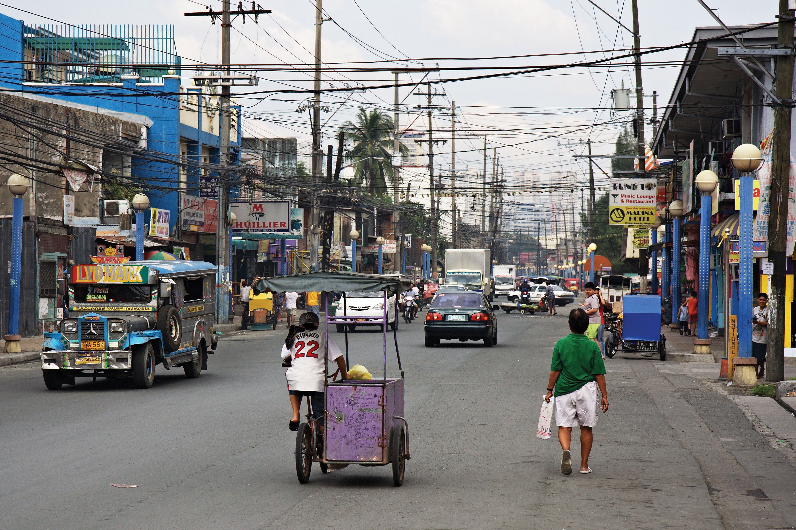The greater metropolitan region of Manila has more than twenty million people. The city of Manila itself is one of the most densely populated large cities in the world.
Source: Photo courtesy of Stefan Munder, http://www.flickr.com/photos/insmu74/4314519466.
The term jeepney is derived from the use of early US army jeeps left over from World War II that were used as base vehicles transformed into a type of taxi. These transformed vehicles took on a cultural identity as jeepneys with their flamboyant colors and extended seating. Jeepneys are now produced for this purpose and are the most widely used public transportation mode in the Philippines. An electric version of the jeepney is being developed for a number of Asian countries.
US corporate giants like America Online, Texas Instruments, Citibank, Hewlett Packard, JPMorgan Chase & Co., and the McClatchy Company (third-largest US newspaper company) have been shifting call centers and other back-office functions to the Philippines. Other European companies like Germany’s global Siemens Corporation, Royal Dutch Shell, Swedish Telecom provider Ericsson Telecommunications, and Danish shipping giant Maersk are examples of corporations that have established outsourcing centers in the Philippines. The economic savings can be considerable. BPO wages in the Philippines are one-fifth of the wages paid for the same jobs in the United States. Those same wages are double the national average wages for Philippine employees. A rise in the number of outsourced jobs is welcome news for the Philippines, whose economy is in need of a boost.
Timor is an island of southern Indonesia not far from Australia. The island is divided by its colonial history. The eastern half was a Portuguese colony beginning in the sixteenth century. Portuguese colonizers introduced Christianity in the form of Roman Catholicism. The western half was associated with Indonesia, which was a Dutch colony during the colonial era. The Japanese occupied the Dutch colony during World War II but had to give it up after they surrendered in 1945. Indonesia received its independence in 1949 and laid claim to the whole island of Timor. East Timor made a declaration of independence in 1975 but was occupied by Indonesia. A bitter civil war erupted. A year later, Indonesia declared it its twenty-seventh province. The civil war resulted in the deaths of as many as two hundred fifty thousand people. It wasn’t until 1999 that Indonesia finally ceded its political control over East Timor. The Australian military has been instrumental in securing East Timor for independence, and has been serving as a peacekeeping force for internal security for the past decade. The United Nations (UN) recognized East Timor as a sovereign independent country in 2002. The official name of the country is listed as Timor-Leste.
Timor-Leste has a population of about 1.2 million. About 98 percent of the population is Roman Catholic. The only other predominant Catholic country in Asia is the Philippines. About 90 percent of the population still works in agriculture. The country has had a difficult time establishing a stable government and reducing conflict. Almost all its infrastructure was damaged in the civil war and rebuilding has been slow. Poor and impoverished due to the civil war over independence, the country does have some opportunity derived from the large natural gas field in the vicinity. East Timor has been working to gain control of its maritime boundaries to benefit from the offshore natural resources.
Identify the following key places on a map: